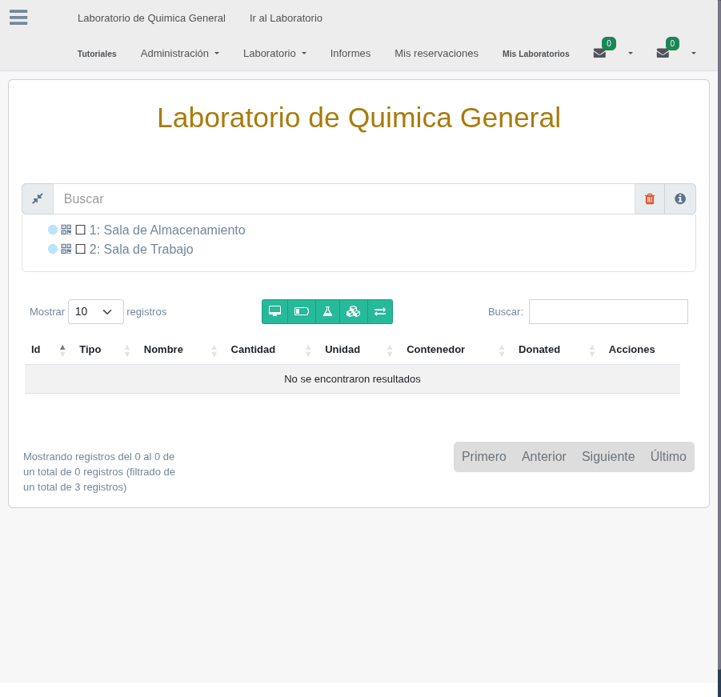

5. Transferencias
Las transferencias permiten mover objetos entre laboratorios de manera controlada y trazable. Organilab implementa un flujo de solicitud y aceptación que garantiza que ambas partes estén de acuerdo antes de que el movimiento se ejecute.
Cómo Funcionan las Transferencias
El sistema de transferencias de Organilab se basa en el modelo TransferObject, que registra cada movimiento de objetos entre laboratorios. Cada transferencia involucra:
- Laboratorio de origen (lab_send) — El laboratorio que envía el objeto
- Laboratorio de destino (lab_received) — El laboratorio que recibe el objeto
- Objeto transferido — El ShelfObject que se mueve
- Cantidad — La cantidad del objeto que se transfiere
- Estado — El estado actual de la transferencia (Solicitada o Aceptada)
Flujo de Transferencia
Las transferencias siguen un flujo de dos pasos para garantizar el control y la trazabilidad:
- Solicitar la transferencia — Un usuario del laboratorio de origen selecciona el objeto que desea transferir, indica la cantidad y el laboratorio de destino. La transferencia queda en estado "Solicitada" hasta que el laboratorio de destino la procese.
- Revisar la solicitud — El laboratorio de destino recibe una notificación de la solicitud pendiente. Un usuario autorizado revisa los detalles de la transferencia: qué objeto se envía, en qué cantidad y desde dónde.
- Aceptar la transferencia — Si el laboratorio de destino está de acuerdo, acepta la transferencia. El estado cambia a "Aceptada" y el sistema actualiza automáticamente las cantidades en ambos laboratorios: resta del origen y suma en el destino.
- Verificar el resultado — Ambos laboratorios pueden verificar que las cantidades se actualizaron correctamente. La transferencia queda registrada en el historial para fines de auditoría.
Diagrama del Flujo de Transferencia
Flujo completo de una transferencia: desde la solicitud en el laboratorio de origen hasta la aceptación en el laboratorio de destino.
Estados de la Transferencia
| Estado | Descripción | Acción Requerida |
|---|---|---|
| Solicitada (Requested) | La transferencia ha sido creada por el laboratorio de origen y está pendiente de revisión | El laboratorio de destino debe revisar y decidir si acepta |
| Aceptada (Accepted) | El laboratorio de destino aceptó la transferencia. Las cantidades se actualizaron | Ninguna. La transferencia está completa |
Marcar como Descarte
Durante el proceso de transferencia, existe la opción de marcar como descarte (mark_as_discard). Esta opción permite transferir un objeto directamente a un estante de descarte del laboratorio de destino, lo cual es útil cuando:
- Un laboratorio desea enviar residuos a un laboratorio centralizado de gestión de residuos
- Se necesita transferir reactivos vencidos a un punto de recolección
- Se realiza una limpieza del laboratorio y los materiales descartados deben registrarse
Transferencias entre Organizaciones
Organilab permite realizar transferencias entre laboratorios que pertenecen a diferentes organizaciones. Esto es especialmente útil en instituciones con múltiples sedes o facultades que necesitan compartir recursos.
Para que una transferencia entre organizaciones funcione, se requiere que:
- Ambos laboratorios estén registrados y activos en el sistema
- El usuario que solicita la transferencia tenga permisos en el laboratorio de origen
- El usuario que acepta la transferencia tenga permisos en el laboratorio de destino
- El objeto que se transfiere exista en el estante del laboratorio de origen
Permisos Necesarios
- Para solicitar: El usuario debe tener permiso de gestión de objetos en el laboratorio de origen
- Para aceptar: El usuario debe tener permiso de gestión de objetos en el laboratorio de destino
- Los administradores de la organización pueden gestionar transferencias en todos los laboratorios bajo su ámbito

Lista de transferencias pendientes mostrando el laboratorio de origen, destino, objeto y estado